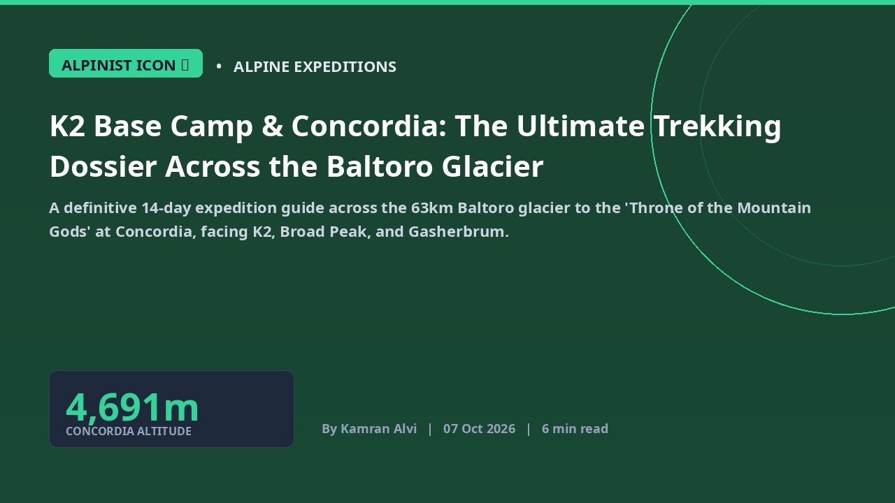

K2 Base Camp & Concordia: The Ultimate Trekking Dossier Across the Baltoro Glacier
A definitive 14-day expedition guide across the 63km Baltoro glacier to the 'Throne of the Mountain Gods' at Concordia, facing K2, Broad Peak, and Gasherbrum.

Concordia in the high Karakoram is rightfully celebrated by global mountaineers as the 'Throne of the Mountain Gods'. Standing at 4,691 meters at the confluence of the Baltoro and Godwin-Austen glaciers, it is the only geographical vantage point on Earth where four 8,000-meter peaks—K2 (8,611m), Broad Peak (8,051m), Gasherbrum I (8,080m), and Gasherbrum II (8,035m)—tower simultaneously within an unbroken 360-degree panorama.
The expedition commences from the roadhead at Askole in the Shigar valley, where trekkers traverse 63 kilometers of raw glacial moraine over eight demanding days. The route climbs past the granite cathedrals of Trango Towers and Cathedral Peak, bivouacking at legendary trail camps including Paiju, Khoburtse, Urdukas, and Goro II before establishing advanced base camps at Concordia and Gilkey Memorial.
Acclimatization discipline and physical conditioning are paramount. With zero permanent settlements beyond Askole, trekkers rely entirely on high-altitude Balti porters, pack mules, and self-contained alpine gear. Navigating shifting crevasses, glacial streams, and unpredictable sub-zero blizzards requires technical crampon proficiency, rugged mountain boots, and strict wilderness ethics adhering to Leave No Trace principles.
The Route from Askole: From Shigar Sands to Glacial Moraine
Departing Skardu via 4x4 jeeps, the trail leaves Askole along the Braldu River gorge before stepping onto the snout of the Baltoro Glacier at Liligo. Trekkers experience raw geological forces as massive seracs and ice towers shape the moving terrain.
Concordia & K2 Base Camp: Standing in the Hall of the 8,000ers
From Concordia, an early morning 5-hour push along the Godwin-Austen glacier leads to K2 Base Camp (5,150m) and the poignant Gilkey Memorial, honoring fallen mountaineers who dared to challenge the 'Savage Mountain'.
High Altitude Safety, Acclimatization & Balti Porter Welfare
Strict staging at Urdukas (4,050m) allows red blood cell generation, preventing Acute Mountain Sickness (AMS). Licensed tour operators ensure ethical porter wages, proper cold-weather gear, and mandatory medical insurance coverage.
Executive Takeaways & Key Insights
- Concordia offers Earth's only amphitheater revealing four 8,000-meter peaks simultaneously.
- A 14-day round-trip trek traversing 120km across dynamic glacial terrain from Askole to K2 Base Camp.
- Peak trekking season spans mid-June to late-August when glacial melt streams are manageable.
Frequently Asked Questions
How fit do you need to be for the K2 Base Camp trek?
Trekkers must possess exceptional cardiovascular endurance capable of hiking 6 to 8 hours daily over uneven moraine, scree, and ice with elevation gains up to 5,150 meters.
What permits are required for the Baltoro Glacier region?
Because the Baltoro Glacier lies within a restricted military border zone of Central Karakoram National Park, foreign trekkers must obtain a government trekking permit through a licensed Pakistani tour operator with an accompanying licensed mountain guide.